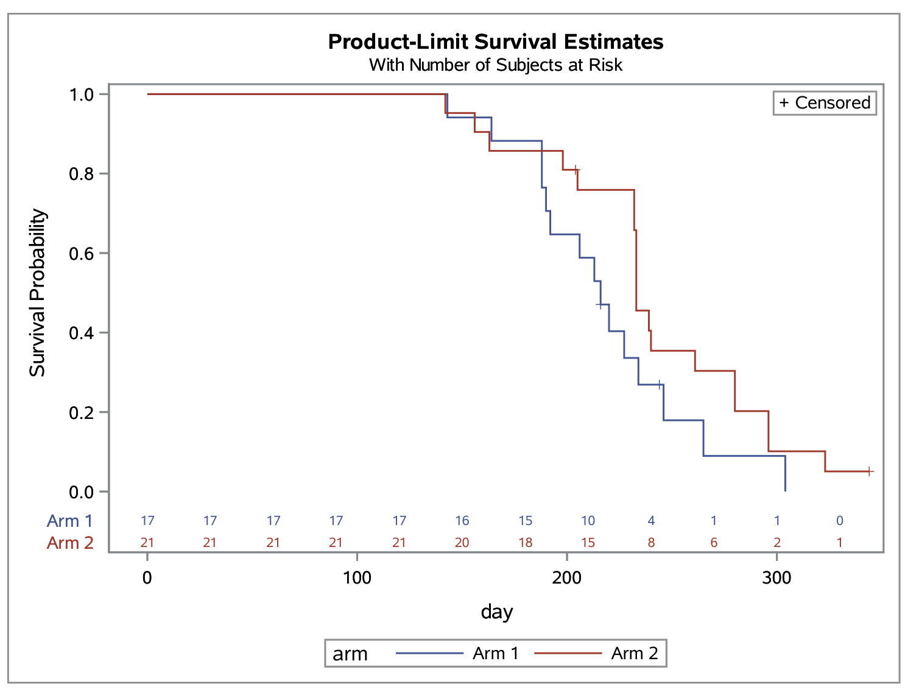
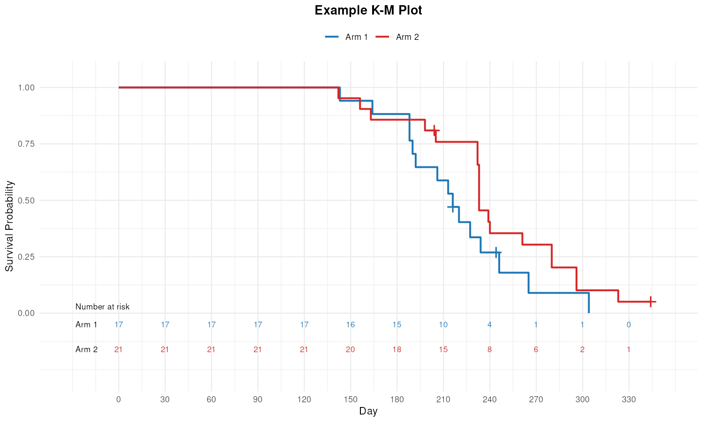

What "passed every check" means P040 figure: match · P053 statistics table: 106 of 106 numbers
Left: the output SAS 9.4 produced. Right: the output of the R script that Muse Spark 1.3 wrote, run in the sandbox.
SAS reference (P040, PROC LIFETEST plot)

Generated R (ggplot2), attempt 2

SAS reference (P053, PROC FREQ CHISQ)
Statistics for Table of TRTPN by n
Statistic DF Value Prob
Chi-Square 2 0.0021 0.9990
Likelihood Ratio Chi-Square 2 0.0021 0.9990
Mantel-Haenszel Chi-Square 1 0.0012 0.9728
Phi Coefficient 0.0029
Contingency Coefficient 0.0029
Cramer's V 0.0029
Fisher's Exact Test
Table Probability (P) 0.0560
Pr <= P 1.0000Generated R, attempt 2
Statistics for Table of TRTPN by n Statistic DF Value Prob Chi-Square 2 0.0021 0.9990 Likelihood Ratio Chi-Square 2 0.0021 0.9990 Mantel-Haenszel Chi-Square 1 0.0012 0.9728 Phi Coefficient 0.0029 Contingency Coefficient 0.0029 Cramer's V 0.0029 Fisher's Exact Test Table Probability (P) 0.0560 Pr <= P 1.0000 Sample Size = 250